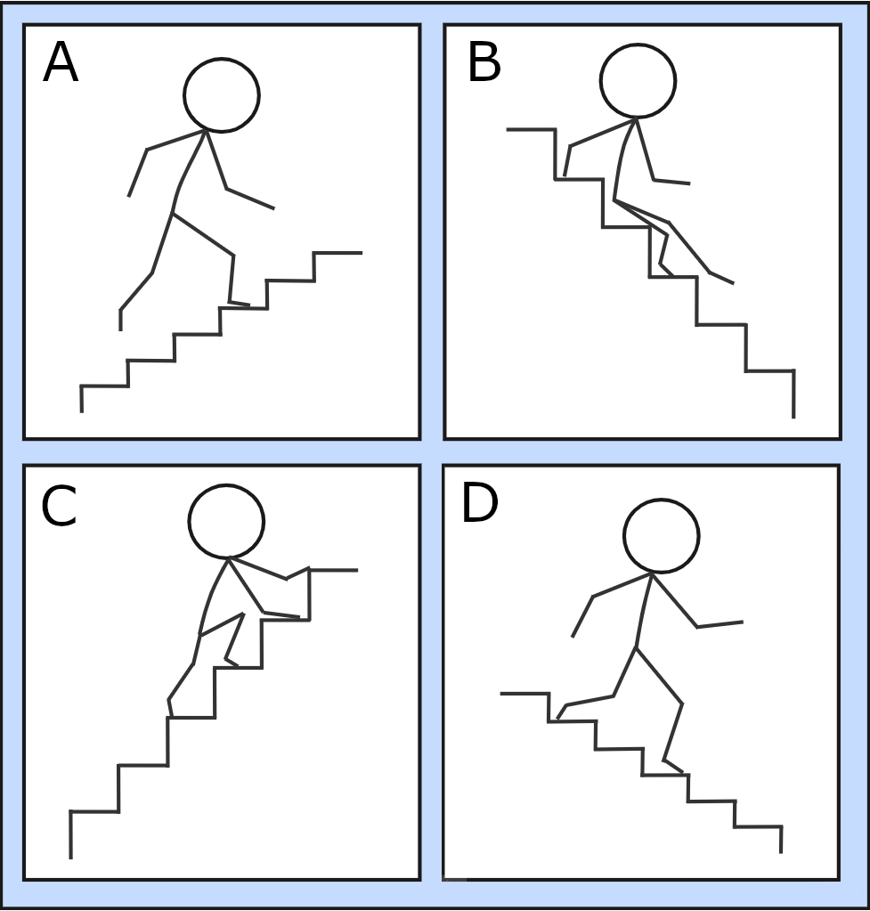
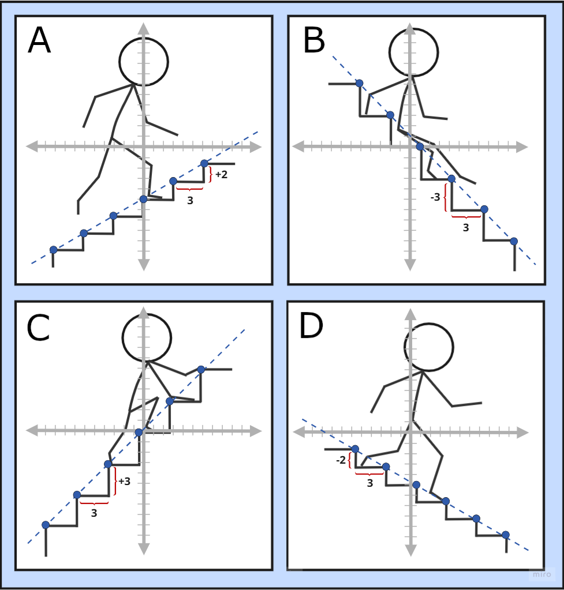
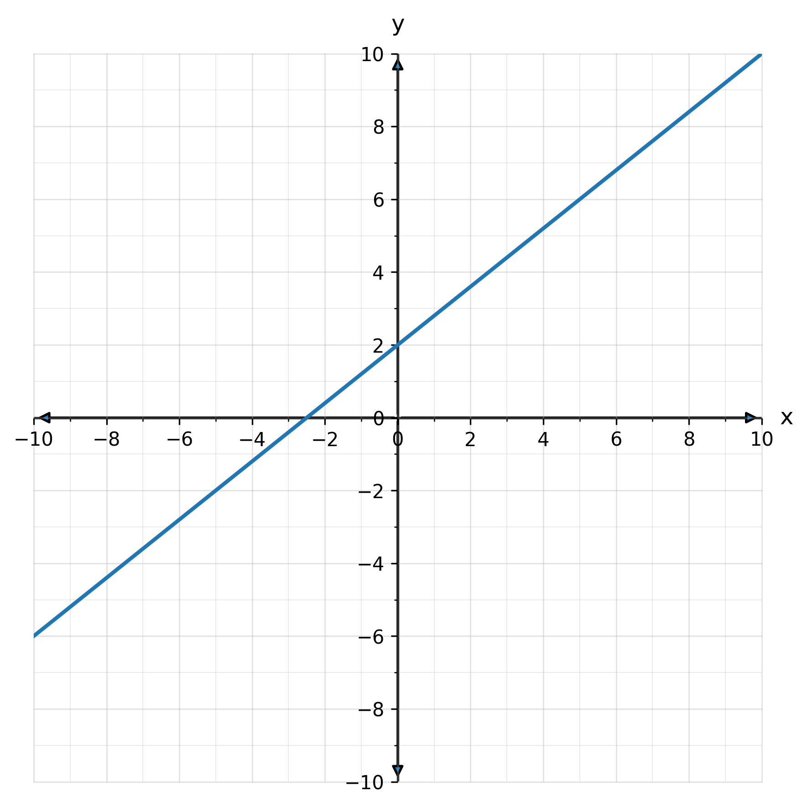
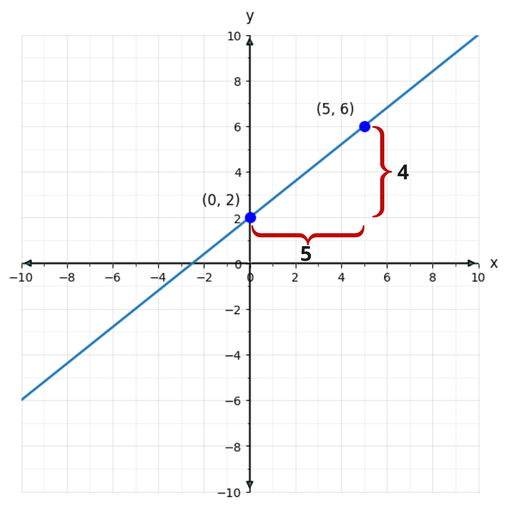
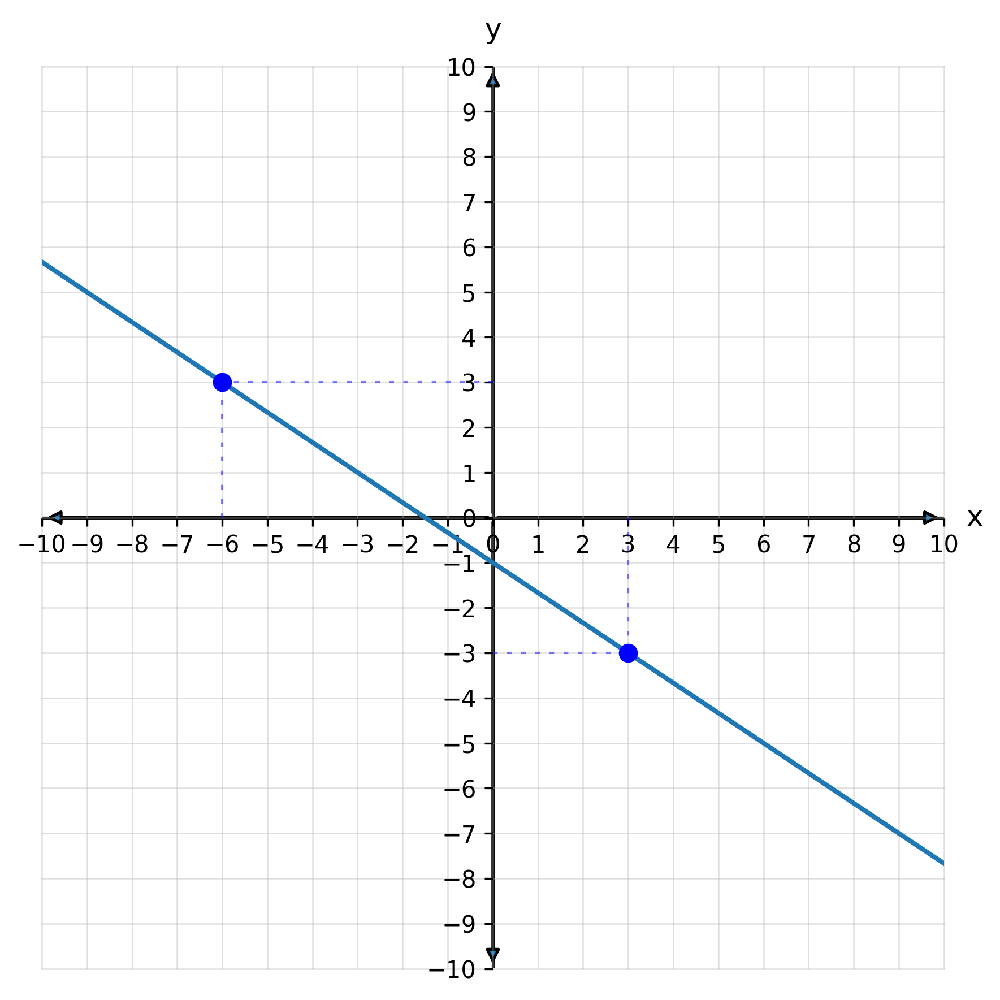
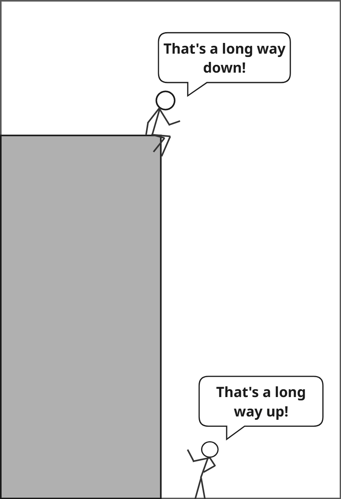

4.2 - Understanding Slope
In the previous lesson, you graphed straight lines by making a table of \(x\) and \(y\) values. Different equations made different graphs, but they were all linear, their points lined up perfectly.
In real-world situations, we often want to compare how fast things change. Some lines rise quickly, some fall, and others stay flat. That rate of change is called the slope, one of the most important ideas in algebra.
🔥 Warm Up
Plot the function \(f(x)=2x+1\).
On the same graph, plot \(g(x)=-3x+1\).
Compare the two lines. How are they alike? How are they different?
👥 Learn Together
4.2.1 - What Is Slope?

Look at the four stairways above. They all move up or down, but not in the same way. Some are steep, some are gentle. Some rise as you move to the right, and others fall.
Imagine walking along one of the stairways. Each step moves you forward and also up or down. How much you go up compared to how much you go forward tells how steep the stairs are.
That comparison is what mathematicians call slope. It measures how something tilts, both its direction (up or down) and its steepness. We use the letter m for slope, think of it as a measure of change:
\[ m = \frac{\text{rise}}{\text{run}} \]
Instead of the words rise and run, we often describe slope using the Greek letter Δ (delta), which means change:
- Δy means “change in \(y\)”: how much the height changes.
- Δx means “change in \(x\)”: how much we move forward.
So the slope formula can also be written as:
\[ m = \frac{\Delta y}{\Delta x} \]
This tells us how much \(y\) changes for each change in \(x\). If \(y\) increases as \(x\) increases, the slope is positive, the line (or stairs) goes up as you move right. If \(y\) decreases as \(x\) increases, the slope is negative, it goes down instead. And if \(y\) changes more sharply, the slope has a larger value, it’s steeper.
Each stairway above has a different amount of up-and-over change, a different slope. In the next section, we’ll place these same stairways on a coordinate grid so we can measure those changes exactly.
| Panel | Direction | Change in y Compared to Change in x |
|---|---|---|
| A | Up (positive) | Slower than \(x\) |
| B | Down (negative) | About the same as \(x\) |
| C | Up (positive) | About the same as \(x\) |
| D | Down (negative) | Slower than \(x\) |
4.2.2 - Finding Slope from a Graph
Now that you’ve seen slope as the amount of change in \(y\) compared to change in \(x\), let’s put numbers to that idea.
We’ll look at the same stairways again, this time drawn on a coordinate grid, so you can measure each change directly and see how slope connects to a line on a graph.

In each panel, count how far the person moves up or down (Δy) and right (Δx):
| Panel | Δy | Δx | Slope \(m=\tfrac{Δy}{Δx}\) |
|---|---|---|---|
| A | +2 | 3 | \(\tfrac{2}{3}\) |
| B | -3 | 3 | -1 |
| C | +3 | 3 | 1 |
| D | -2 | 3 | -\(\tfrac{2}{3}\) |
These numbers match what your eyes already noticed in the stairways:
- A and C go up (positive slope).
- B and D go down (negative slope).
- B and C are steep - \(y\) changes more for them.
- A and D are less steep - \(y\) changes less for them.
Example 1: Finding slope from a graph
Let’s find the slope of this line like we did with the stairs.

First, we pick two clear points on the line, here, \((0,2)\) and \((5,6)\).

Start at \((0,2)\) and count boxes to get to \((5,6)\):
- Move right until you get to \(x=5\): \(\Delta x = 5\)
- From there, move up until you reach \(y=6\): \(\Delta y = 4\)
Between these two points, the line moves right 5 and up 4 so the slope is:
\[ m = \frac{\Delta y}{\Delta x} = \frac{4}{5} \]
Compute the slope of the line.

Counting from \((-6,3)\) to \((3,-3)\) you move:
- 9 to the right
- 6 down
So \(\Delta x=9\), \(\Delta y=-6\), and \(m=-\tfrac{6}{9}=-\tfrac{2}{3}\).
Counting boxes works great when the graph is clear. But sometimes the points are far apart or hard to see. In those cases, we use a formula to calculate slope exactly.
4.2.3 - Finding Slope Using the Slope Formula
Whether we count boxes or use numbers directly, the idea is the same, slope measures how much \(y\) changes for every change in \(x\). When counting is impractical, we can calculate slope using a simple formula.
For the points \((x_1, y_1)\) and \((x_2, y_2)\), the slope is:
\[ m = \frac{\Delta y}{\Delta x} = \frac{y_2 - y_1}{x_2 - x_1} \]
Example 2: Using the slope formula
Compute the slope of the line between the points \((-2, 8)\) and \((10, 6)\).
Here \(x_1=-2\), \(x_2=10\), \(y_1=8\), and \(y_2=6\).
\[ \begin{aligned} m &= \frac{y_2 - y_1}{x_2 - x_1} \\ &= \frac{6 - 8}{10 - (-2)} \\ &= \frac{-2}{12} \\ &= -\frac{1}{6} \end{aligned} \]
Example 3: More practice with the slope formula
Compute the slope of the line between the points \((3, -2)\) and \((5, -5)\).
Here \(x_1=3\), \(x_2=-2\), \(y_1=5\), and \(y_2=-5\).
\[ \begin{aligned} m &= \frac{-5 - (-2)}{5-3} \\ &= -\frac{3}{2} \\ \end{aligned} \]
Example 4: Flat line
Compute the slope of the line containing \((4, 3)\) and \((2, 3)\).
Here \(x_1=4\), \(x_2=2\), \(y_1=3\), and \(y_2=3\).
\[ \begin{aligned} m &= \frac{3 - 3}{2 - 4} \\ &= 0 \end{aligned} \]
It means the line is horizontal. If \(y\)-values don’t change as \(x\) changes, then there is no “rise”.
Example 5: Undefined slopes
Find the slope of the line containing \((5, -3)\) and \((5, 6)\).
Here \(x_1=5\), \(x_2=5\), \(y_1=3\), and \(y_2=6\).
\[ \begin{aligned} m &= \frac{6 - 3}{5 - 5} \\ &= \frac{3}{0} \\ \end{aligned} \]
The slope is undefined because you can’t divide by zero.
It means the line is vertical. You move up and down but not left and right.
There is another way to think about the slope of vertical lines. Look at the picture below. One person is at the top of a cliff looking down at someone on the ground.

Is the cliff straight up, or straight down? It depends on who you ask! The person on the ground would say it’s straight up. The person on top would say it’s straight down. It can’t be both, and yet it is! Since it’s both straight up and straight down, we say the slope is undefined.
\[ \begin{aligned} m &= \frac{2 - 95}{-50 - 0} \\ &= \frac{-93}{-50} \\ &= \frac{93}{50} \end{aligned} \]
▶️ Interactive Learning
Want to get a better understanding of how slope works?
Try using the Interactive Slope Explorer
✍️ Practice On Your Own
Is the slope positive, negative, zero, or undefined.
A line that rises from left to right.
A line that falls from left to right.
A horizontal line through \((0,4)\).
A vertical line through \((x=-3)\).
A line that goes down very slightly, almost flat, from left to right.
Plot the points and count to find the slope:
From \((0,0)\) to \((3,2)\)
From \((-2,1)\) to \((4,4)\)
From \((1,5)\) to \((4,2)\)
From \((-3,-3)\) to \((2,-3)\)
From \((4,-1)\) to \((4,3)\)
Use the slope formula to calculate the slope:
\((1,3)\) and \((4,6)\)
\((-2,5)\) and \((2,-1)\)
\((0,0)\) and \((-3,9)\)
\((2,-3)\) and \((5,-3)\)
\((-4,2)\) and \((-4,-5)\)
\((1,\tfrac{1}{2})\) and \((3,\tfrac{5}{2})\)
\((-6,9)\) and \((3,-6)\)
Real-world slope problems:
A ramp rises 3 inches for every 36 inches forward. What is the slope?
A road climbs 200 feet over a horizontal distance of 1 mile (5280 ft). What is the slope?
A plumber installs a drain pipe that drops ¼ inch for every 12 inches of length. What is the slope as a fraction?
A line passes through the points (time = 1 hour, distance = 40 miles) and (time = 3 hours, distance = 100 miles). What is the slope, and what does it represent?
A skier starts 1000 ft above the lodge and reaches 400 ft above it after skiing 3000 ft forward. What is the slope?
A student graphs temperature over time: \((2,40°)\) and \((6,68°)\). What is the slope, and what does it tell you?
Challenge Problems:
Two lines have slopes \(m_1=3\) and \(m_2=-\tfrac{1}{3}\). What is true about the relationship between these lines?
A line passes through the origin and another point \((x,y)\). Show algebraically that if the line’s slope doubles, the new point \((x',y')\) must satisfy \(y' = 2y\) and \(x' = x\). What does this tell you about how slope affects “steepness” when the \(x\) values stay fixed?
Positive
Negative
Zero
Undefined
Negative (small magnitude; just below 0)
\(\frac{2}{3}\)
\(\frac{1}{2}\)
\(-1\)
\(0\)
Undefined
\(1\)
\(-\frac{3}{2}\)
\(-3\)
\(0\)
Undefined
\(1\)
\(-\frac{5}{3}\)
\(\frac{1}{12}\)
\(\frac{5}{132}\approx0.0379\)
\(-\frac{1}{48}\)
\(30\) miles/hour (speed)
\(-\frac{1}{5}\)
7° per hour